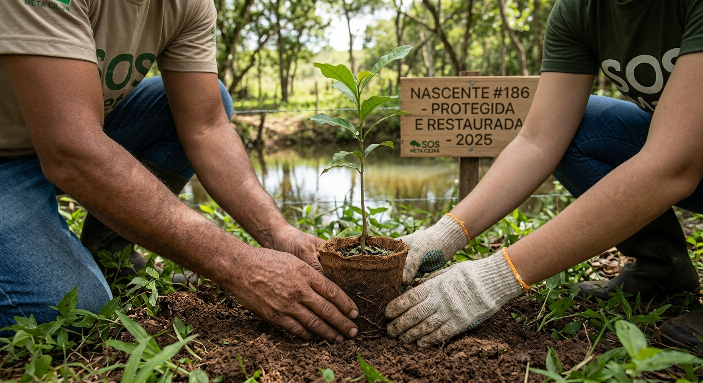
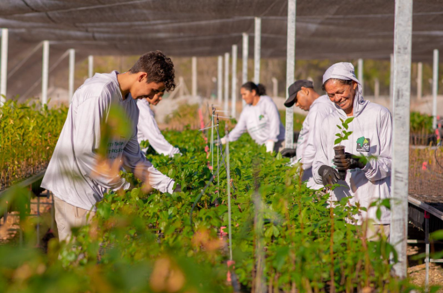

Missão
Proteger nascentes e restaurar matas ciliares, garantindo água de qualidade para as cidades e o campo.
 Instituto Mata Ciliar
Instituto Mata Ciliar

O Instituto Mata Ciliar é uma ONG fundada em 2011 que planta mata nativa nas margens de rios e córregos, cerca nascentes e ensina produtores rurais e estudantes a manter a floresta em pé. Hoje trabalhamos com 41 comunidades e mostramos cada real aplicado.
Conheça os projetos ou faça seu cadastro como voluntário ou apoiador.
Proteger nascentes e restaurar matas ciliares, garantindo água de qualidade para as cidades e o campo.
Ser referência em restauração de bacias hidrográficas, com comunidades participando de cada etapa do trabalho.
| Indicador | Resultado |
|---|---|
| Nascentes cercadas e protegidas | 186 |
| Mata ciliar restaurada | 412 hectares |
| Mudas nativas plantadas | 238 mil |
| Comunidades e sítios parceiros | 41 |
| Estudantes atendidos | 1.900 |

A organização funciona em quatro níveis, com prestação de contas de cada um ao nível acima:
Publicamos o balanço anual e as contas auditadas. Veja como foi aplicado cada real recebido em 2025:
| Destino | Percentual |
|---|---|
| Projetos em campo e viveiros | 82% |
| Captação de recursos | 11% |
| Administração | 7% |
Para receber o relatório anual por e-mail, faça o cadastro e marque a opção de relatórios.
Instituto Mata Ciliar
Rua das Nascentes, 100, Centro
São Paulo, SP, CEP 01000-000
Telefone: (11) 4000-0000
E-mail: contato@exemplo.org.br
Atendimento de segunda a sexta-feira, das 9h às 17h.